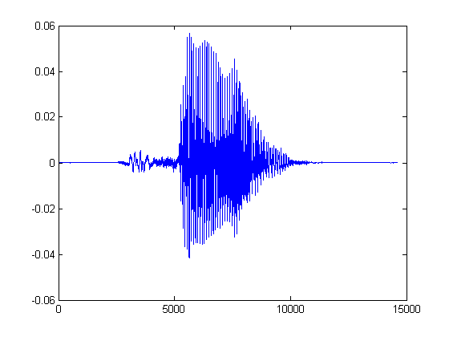
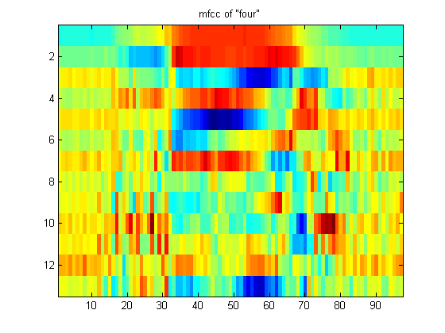

Plot a spectogram and its MFCC representation
Data source: Tommi Jaakkola
% This file is from pmtk3.googlecode.com loadData('speechDataDigits4And5'); figure; if signalToolboxInstalled specgram(signal1); title('spectogram of "four"'); else plot(signal1); end printPmtkFigure speechFourSpectogram figure; imagesc(train4{1}); title('mfcc of "four"'); printPmtkFigure speechFourMFCC2 